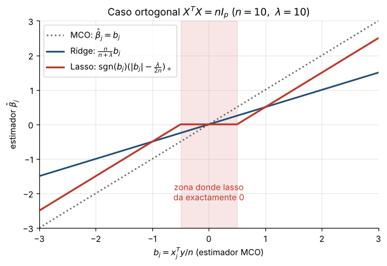
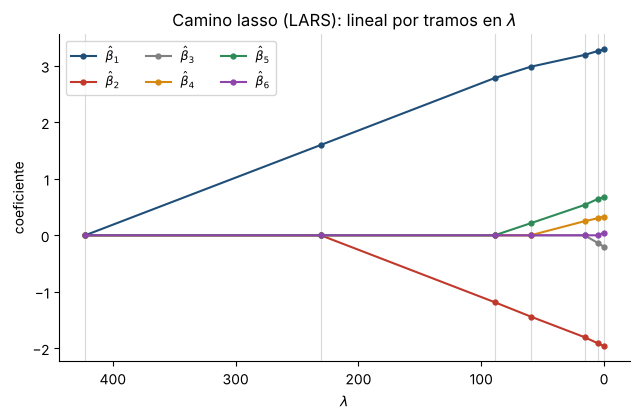

6. Lasso: obtención de los estimadores#
Enunciado
Con datos estandarizados como en el capítulo 5 (\(\sum_i x_{ij}^2=n\), \(\by\) centrado), hallar los estimadores que minimizan
“tal como se realizó en el caso de ridge”, y describir el algoritmo LARS sugerido en las notas.
Idea
\(|\beta_j|\) no es derivable en 0, así que no se puede igualar el gradiente a cero como en ridge. Se usa el subdiferencial: en 0 el «derivable» se reemplaza por el intervalo \([-1,1]\). Eso produce condiciones (KKT) que generan coeficientes exactamente nulos.
6.1 Intercepto, existencia y unicidad#
El término de penalización no incluye a \(\beta_0^\star\), así que la derivada respecto a él es la del capítulo 4: \(\hat\beta_0^\star=\bar y=0\) (por el capítulo 5). Queda minimizar \(S_\lambda(\bbeta)\) sin intercepto.
\(S_\lambda=f+\lambda\lVert\bbeta\rVert_1\) con \(f(\bbeta)=\lVert\by-X\bbeta\rVert^2\) convexa (su hessiano \(2X^\T X\succeq0\)) y \(\lVert\cdot\rVert_1\) convexa (desigualdad triangular y homogeneidad). Luego \(S_\lambda\) es convexa, continua y coerciva (\(S_\lambda\ge \lambda\lVert\bbeta\rVert_1\to\infty\)), por lo que tiene un mínimo global. Si \(\rg X=p\), \(f\) es estrictamente convexa y el mínimo es único.
6.2 Condiciones de optimalidad (KKT)#
Teorema 1 (KKT del lasso)
\(\hat\bbeta\) es mínimo si y solo si, con \(c_j:=\bx_j^\T(\by-X\hat\bbeta)\),
Demostración
Para una función convexa, \(\hat\bbeta\) es mínimo si y solo si \(\cero\in\partial S_\lambda(\hat\bbeta)\). La parte suave aporta \(-2X^\T(\by-X\bbeta)\) y \(\partial|\beta_j|=\{\sgn\beta_j\}\) si \(\beta_j\neq0\), \(=[-1,1]\) si \(\beta_j=0\). Así \(\cero\in\partial S_\lambda\) equivale a \(2c_j=\lambda v_j\) con \(v_j=\sgn\hat\beta_j\) (si \(\hat\beta_j\neq0\)) o \(v_j\in[-1,1]\) (si \(\hat\beta_j=0\)), que son las condiciones enunciadas.
Por qué hay ceros exactos: \(\hat\beta_j=0\) ocurre en todo un intervalo, \(|2c_j|\le\lambda\); en ridge, en cambio, \(2c_j=2\lambda\hat\beta_j\) exige \(c_j=0\) exactamente.
Valor crítico. \(\hat\bbeta=\cero\) es óptimo si y solo si \(|2\bx_j^\T\by|\le\lambda\) para todo \(j\), es decir
Como \(\lVert\bx_j\rVert^2=n\), \(\bx_j^\T\by\) es proporcional a la correlación de \(\bx_j\) con \(\by\): la primera variable en entrar es la más correlacionada con \(\by\).
6.3 Fórmula con conjunto activo conocido#
Sea \(A=\{j:\hat\beta_j\neq0\}\) y \(\bs_A=\sgn(\hat\bbeta_A)\). Las condiciones de \(j\in A\) dicen \(X_A^\T(\by-X_A\hat\bbeta_A)=\frac\lambda2\bs_A\); luego, si \(X_A^\T X_A\) es invertible,
válida mientras \(\sgn(\hat\bbeta_A)=\bs_A\) y \(|\bx_k^\T(\by-X_A\hat\bbeta_A)|\le\lambda/2\) para \(k\notin A\). Es el análogo de \((X^\T X+ \lambda I)^{-1}X^\T\by\) de ridge. En cada tramo, \(\dfrac{d\hat\bbeta_A}{d\lambda}=-\frac12(X_A^\T X_A)^{-1}\bs_A\) es constante: la trayectoria \(\lambda\mapsto\hat\bbeta(\lambda)\) es lineal por tramos.
6.4 Caso ortogonal \(X^\T X=nI_p\): umbral suave#
Sea \(b_j=\bx_j^\T\by/n\) (el estimador MCO). Como \(\by^\T X\bbeta=n\sum_j b_j\beta_j\),
que es separable. Para cada \(j\) (KKT): si \(\hat\beta_j>0\), \(2n(\hat\beta_j-b_j)+\lambda=0\Rightarrow\hat\beta_j=b_j-\frac\lambda{2n}\), consistente solo si \(b_j>\frac\lambda{2n}\); si \(\hat\beta_j<0\), \(\hat\beta_j=b_j+\frac\lambda{2n}\), consistente si \(b_j<-\frac\lambda{2n}\); y \(\hat\beta_j=0\) si \(|b_j|\le\frac\lambda{2n}\). Resumiendo:
(Para ridge: \((nI+\lambda I)^{-1}X^\T\by=\frac n{n+\lambda}\bb\).) Lasso resta una constante y trunca en 0; ridge multiplica por un factor menor que 1.

Figura 2. MCO, ridge y lasso en el caso ortogonal.
6.5 Caso general: descenso por coordenadas#
Fijando los demás coeficientes y con \(\br^{(j)}=\by-\sum_{k\neq j}\bx_k\beta_k\),
así que la actualización óptima es el mismo umbral suave: \(\beta_j\leftarrow\sgn(z_j)(|z_j|-\frac\lambda{2n})_+\) con \(z_j=
\bx_j^\T\br^{(j)}/n\). Iterar sobre \(j\) converge al mínimo global porque la parte no suave es separable (Tseng,
2001). Esto es lo que usa Lasso de scikit-learn, cuyo alpha cumple \(\alpha=\lambda/(2n)\).
6.6 Algoritmo LARS (Efron et al., 2004)#
Se trabaja con columnas de norma 1 (\(\tilde\bx_j=\bx_j/\sqrt n\), \(\tilde\beta_j=\sqrt n\beta_j\), \(\tilde\lambda=\lambda/\sqrt n\); el orden de entrada no cambia). Sea \(\br=\by-\hat\bmu\), \(c_j=\bx_j^\T\br\), \(C=\max_j|c_j|\).
Inicio: \(\hat\bmu=\cero\), \(\hat\bbeta=\cero\), \(A=\{\arg\max_j|c_j|\}\). Aquí \(\lambda=2C=\lambda_{\max}\).
Dirección equiangular. Con \(s_j=\sgn(c_j)\), \(X_A=(s_j\bx_j)_{j\in A}\), \(G_A=X_A^\T X_A\), \(A_A= (\uno^\T G_A^{-1}\uno)^{-1/2}\), \(\bw_A=A_AG_A^{-1}\uno\) y \(\bu_A=X_A\bw_A\): \(\lVert\bu_A\rVert=1\) y \(X_A^\T\bu_A=A_A\uno\), o sea, \(\bu_A\) forma el mismo ángulo con todos los predictores activos.
Avance \(\hat\bmu\leftarrow\hat\bmu+\gamma\bu_A\). Las correlaciones activas bajan juntas, \(C(\gamma)=C-\gamma A_A\); las inactivas son \(c_k(\gamma)=c_k-\gamma a_k\) con \(a_k=\bx_k^\T\bu_A\). Entra la variable \(k\) en \(\gamma_{\text{ent}}=\min^+_{k\notin A}\Big\{\frac{C-c_k}{A_A-a_k},\frac{C+c_k}{A_A+a_k}\Big\}\).
Modificación lasso. Los coeficientes activos cambian como \(\beta_j(\gamma)=\beta_j+\gamma s_jw_j\). Si alguno cruza 0 antes de \(\gamma_{\text{ent}}\) (en \(\gamma_{\text{cero}}=\min^+_j\{-\beta_j/(s_jw_j)\}\)), se avanza hasta ahí y esa variable sale de \(A\).
Repetir hasta llegar a \(\lambda=0\).
Con la modificación, los nodos de LARS son exactamente los de la trayectoria lasso, con \(\lambda=2C\) (pues \(|c_j|=\lambda/2\) para \(j\in A\), por KKT), y en cada tramo vale (11).

λ_max = 2‖Xᵀy‖∞ = 422.4848; primer nodo de LARS: 422.4848
Figura 3. Camino lasso calculado con LARS (\(n=60\), \(p=6\)): lineal por tramos; los coeficientes entran uno a uno y algunos permanecen en 0.